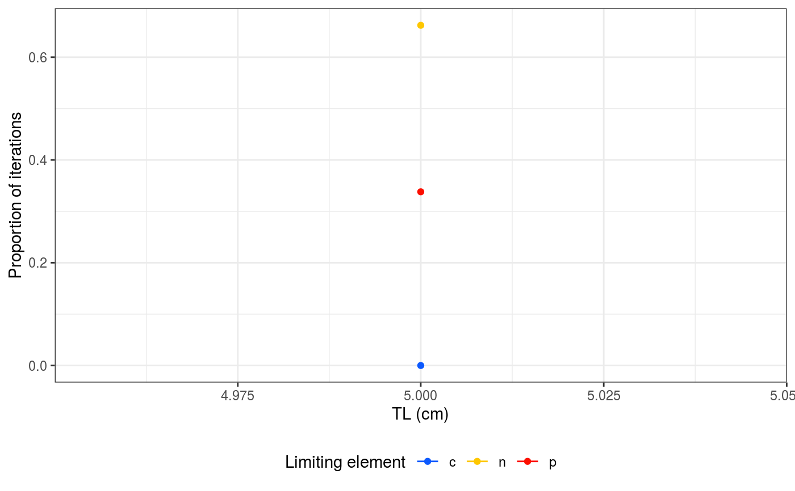

limitation.RdThis function allows you extract the proportions of the iterations for which c, n and p are the limiting element in the model.
limitation(mod, plot = TRUE)
| mod | Model output from cnp_model_mcmc(). |
|---|---|
| plot | Argument to specify if results should be shown in a plot. |
Returns a data frame with:
Total length, in cm
c, n or p
the proportion of iterations for which there is limitation by the element
mod <- fishflux::cnp_model_mcmc(TL = 5, param = list(Qc_m = 40, Qn_m = 10, Qp_m = 4, Dc_sd = 0.1, Dn_sd = 0.05, Dp_sd = 0.05))#> Warning: not inputting certain parameters may give wrong results#> Warning: adding standard values for ac_m#> Warning: adding standard values for an_m#> Warning: adding standard values for ap_m#> Warning: adding standard values for Dc_m#> Warning: adding standard values for Dn_m#> Warning: adding standard values for Dp_m#> Warning: adding standard values for linf_m#> Warning: adding standard values for k_m#> Warning: adding standard values for t0_m#> Warning: adding standard values for theta_m#> Warning: adding standard values for r_m#> Warning: adding standard values for h_m#> Warning: adding standard values for lwa_m#> Warning: adding standard values for lwb_m#> Warning: adding standard values for mdw_m#> Warning: adding standard values for v_m#> Warning: adding standard values for F0nz_m#> Warning: adding standard values for F0pz_m#> Warning: adding standard values for alpha_m#> Warning: adding standard values for f0_m#> Warning: adding standard values for lt_sd#> Warning: adding standard values for ac_sd#> Warning: adding standard values for an_sd#> Warning: adding standard values for ap_sd#> Warning: adding standard values for linf_sd#> Warning: adding standard values for k_sd#> Warning: adding standard values for t0_sd#> Warning: adding standard values for theta_sd#> Warning: adding standard values for r_sd#> Warning: adding standard values for h_sd#> Warning: adding standard values for lwa_sd#> Warning: adding standard values for lwb_sd#> Warning: adding standard values for mdw_sd#> Warning: adding standard values for v_sd#> Warning: adding standard values for F0nz_sd#> Warning: adding standard values for F0pz_sd#> Warning: adding standard values for Qc_sd#> Warning: adding standard values for Qn_sd#> Warning: adding standard values for Qp_sd#> Warning: adding standard values for alpha_sd#> Warning: adding standard values for f0_sd#> #> SAMPLING FOR MODEL 'cnp_model_mcmc' NOW (CHAIN 1). #> Chain 1: Iteration: 1 / 1000 [ 0%] (Sampling) #> Chain 1: Iteration: 100 / 1000 [ 10%] (Sampling) #> Chain 1: Iteration: 200 / 1000 [ 20%] (Sampling) #> Chain 1: Iteration: 300 / 1000 [ 30%] (Sampling) #> Chain 1: Iteration: 400 / 1000 [ 40%] (Sampling) #> Chain 1: Iteration: 500 / 1000 [ 50%] (Sampling) #> Chain 1: Iteration: 600 / 1000 [ 60%] (Sampling) #> Chain 1: Iteration: 700 / 1000 [ 70%] (Sampling) #> Chain 1: Iteration: 800 / 1000 [ 80%] (Sampling) #> Chain 1: Iteration: 900 / 1000 [ 90%] (Sampling) #> Chain 1: Iteration: 1000 / 1000 [100%] (Sampling) #> Chain 1: #> Chain 1: Elapsed Time: 0 seconds (Warm-up) #> Chain 1: 0.009857 seconds (Sampling) #> Chain 1: 0.009857 seconds (Total) #> Chain 1:#> #>#> tl nutrient prop_lim #> 1 5 c 0.000 #> 2 5 n 0.662 #> 3 5 p 0.338